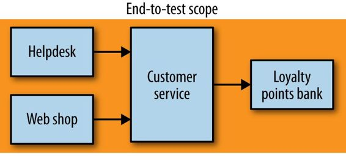

End-to-end tests are tests run against your entire system. Often they will be driving a GUI through a browser, but could easily be mimicking other sorts of user interaction, like uploading a file.
These tests cover a lot of production code, as we see in Figure 7-6 . So when they pass, you feel good: you have a high degree of confidence that the code being tested will work in production. But this increased scope comes with downsides, and as we’ll see shortly, they can be very tricky to do well in a microservices context.

Figure 7-6. Scope of end-to-end tests on our example system